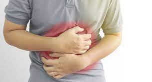
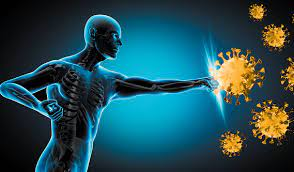

Cardiovascular System:
Regular consumption of McDonald's and fast food, which are often high in unhealthy fats, sodium, and cholesterol, can lead to an increased risk of cardiovascular diseases such as heart disease, hypertension, and atherosclerosis. These foods contribute to elevated levels of bad cholesterol (LDL) and triglycerides, leading to plaque buildup in the arteries and reduced heart health.
Digestive System:
McDonald's and fast food are often low in fiber and essential nutrients, leading to poor digestive health. These foods can cause digestive issues such as bloating, constipation, and indigestion. Additionally, the high levels of saturated fats and processed ingredients may disrupt gut microbiota balance and contribute to gastrointestinal discomfort.
Immune System:
Poor dietary choices, including frequent consumption of McDonald's and fast food, can weaken the immune system and increase susceptibility to infections and illnesses. These foods lack essential nutrients and antioxidants necessary for immune function, compromising the body's ability to fight off pathogens and maintain optimal immune health.
